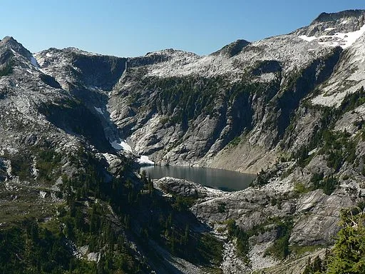
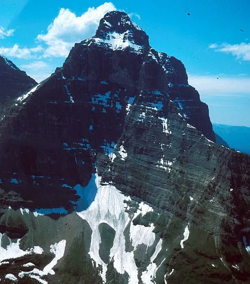
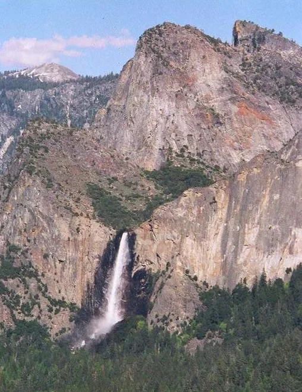
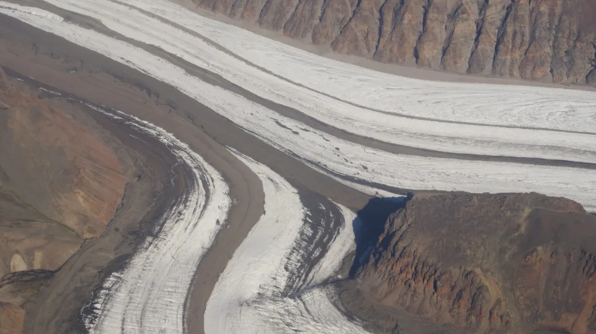
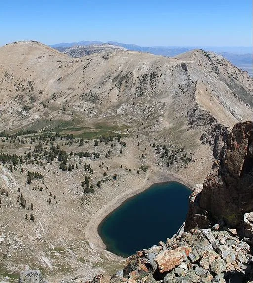
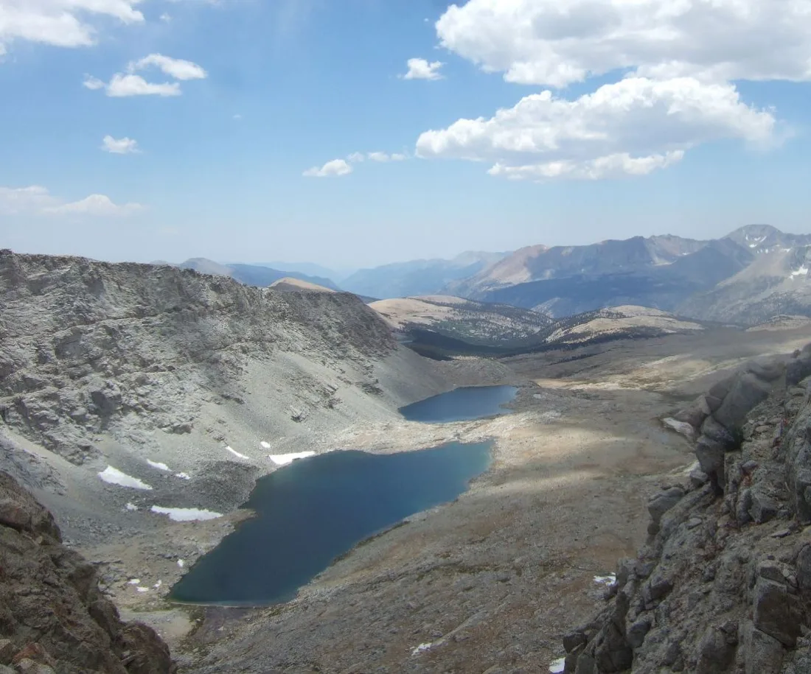
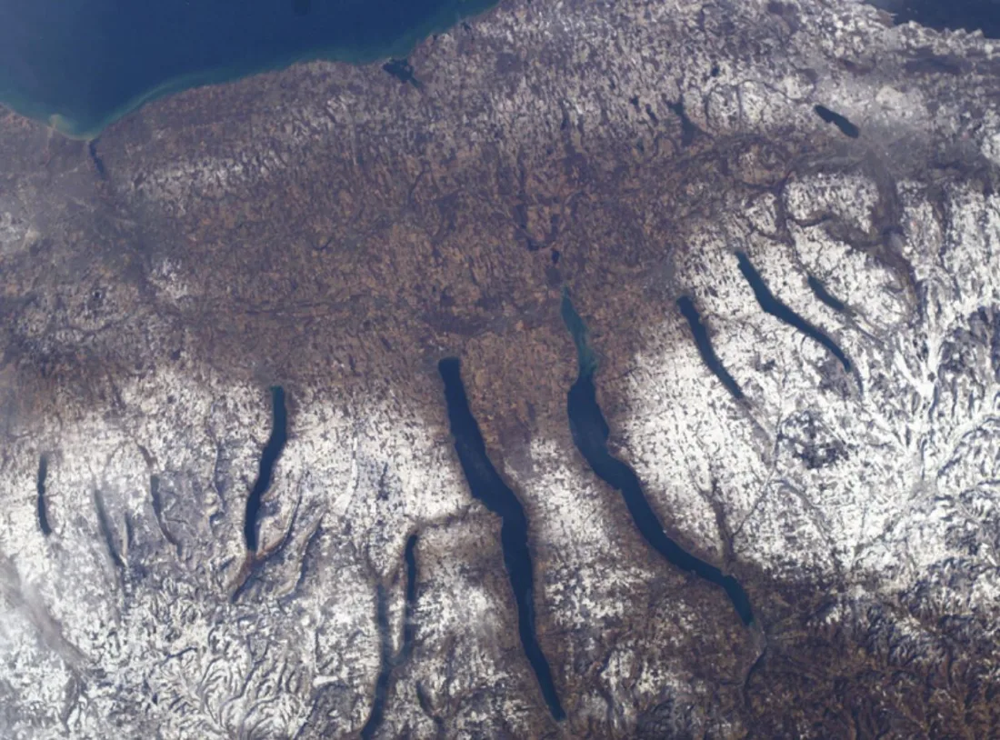
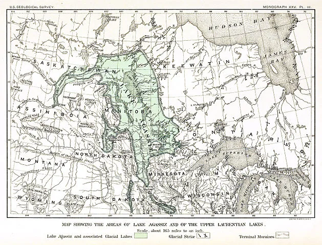
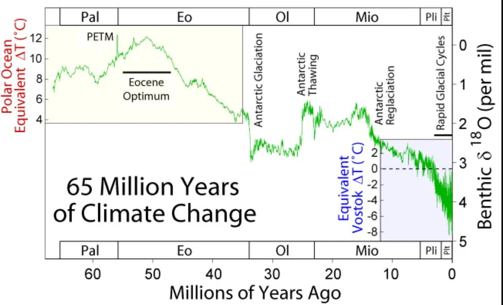

Learning outcomes
By the end of Chapter 14 you should be able to do each of these. The tag shows where it is covered.
- 14.1Differentiate the different types of glaciers and contrast them with sea icebergs.
- 14.2Describe how glaciers form, move, and create landforms.
- 14.3Describe glacial budget; describe the zones of accumulation, equilibrium, and melting.
- 14.4Identify glacial erosional and depositional landforms and interpret their origin; describe glacial lakes.
- 14.5Describe the history and causes of past glaciations and their relationship to climate, sea-level changes, and isostatic rebound.
How to use this guide
Underlined words are key terms. Click one, or open Key terms at the bottom right, to read and search every definition from this chapter. The chapter follows a glacier through its life: how snow becomes ice (14.1), how the ice moves (14.2), how its budget makes it grow or shrink (14.3), the landforms it carves and leaves behind (14.4), and the ice ages that spread ice over the continents (14.5).

Earth's (its ice) makes different erosional and depositional features from its (its liquid water). Ice exists mainly in two forms:
- : large accumulations of ice that exist year-round on land.
- : masses of ice floating on the ocean, though many began as parts of glaciers.
Glaciers cover about 10% of Earth's land surface and are powerful agents of . They usually form in mountains with cold temperatures and high , but also in low-lying areas, such as Greenland and Antarctica, that stay extremely cold all year.
14.1Glacier formation
Glaciers form where snowfall is not completely melted in summer, so snow builds up year after year (Figure 14.2):
- lasts all year; a thin layer of it is a .
- Over many seasons the snow settles, compacts, and bonds with the layers below; the space between grains shrinks.
- Buried older snow compacts into (névé), a granular mass of ice crystals.
- As firn is buried deeper, compressed, and recrystallized, it becomes less porous and turns into .
Solid glacier ice still traps small pockets of air. These bubbles are samples of the past atmosphere, so ice cores record its composition.
There are three general types of glaciers (Table 14.1).
| Type | Size and setting | Examples |
|---|---|---|
| In mountains, usually filling long, narrow valleys; also at lower elevations where yearly precipitation is high | Andes, Rockies, Alps, Himalayas; Olympic Peninsula, Washington | |
| (continental glacier) | Covers millions of km² of land; thousands of meters thick | Greenland, Antarctica |
| A smaller ice sheet, under 50,000 km²; usually at high elevations, may cover mountaintops | Vatnajökull and other caps on Iceland; Snow Dome near Mt. Olympus, Washington |

The Greenland Ice Sheet is the largest ice mass in the Northern Hemisphere: about 1.7 million km² and up to about 3,000 m thick (Figure 14.4). The Antarctic Ice Sheet is far larger, covering almost the whole continent; its thickest parts are over 4,000 m thick, and its weight pushes the bedrock below sea level in many places (Figure 14.5).


During the last glacial maximum (the last "Ice Age", 14.5) the covered most of Canada and the northern United States (Figure 14.7).

Check yourself: Section 14.1 quiz in the textbook ↗
14.2Glacier movement
As ice piles up, it begins to flow downhill under its own weight. In 1948 glaciologists drove hollow vertical rods into the Jungfraufirn Glacier in the Swiss Alps and measured them for two years. The ice at the surface stayed fairly rigid, while the ice inside the glacier flowed downhill: the rods bent (Figure 14.8). Ice moves slowest near the bottom and faster above, and the rigid top ice is carried along on the ice below.
A glacier moves in two ways, which in that study shared the motion about equally:
- : the ice slides on a thin film of meltwater on the bedrock. Pressure lowers the melting point of ice a little, which helps keep the base wet.
- Internal flow: the ice itself slowly deforms and flows.
The glacier has two zones (Table 14.2):
| Zone | Where | Behavior |
|---|---|---|
| Top ~50 m | Rigid and brittle; breaks into , which die out at its base | |
| Below ~50 m, where stress exceeds about 100 kPa; most of the glacier | Bends and flows instead of breaking; carries sediment from boulders to clay that grinds the bedrock |
Crevasses are large cracks that open in the brittle zone as the glacier moves. A crevasse can be hidden by a , making it a hazard for people crossing the glacier (Figure 14.9).
 Chevron crevassesWalter Siegmund, CC BY-SA.
Chevron crevassesWalter Siegmund, CC BY-SA. Crossing a crevasseEaston Glacier, North Cascades, Washington. Mauri S. Pelto, public domain.
Crossing a crevasseEaston Glacier, North Cascades, Washington. Mauri S. Pelto, public domain.
Check yourself: Section 14.2 quiz in the textbook ↗
14.3Glacial budget
A works like a bank account, with ice as the balance: income is snow added in winter and expense is snow and ice melted in summer. Use the buttons under Figure 14.10 to compare budgets.
- : the upper part, where snowfall exceeds melting and the surface is always covered with snow.
- (also snowline or firn line): the boundary between the two zones. It shifts with the seasons and from year to year as the budget changes.
- : the lower part, where melting exceeds snowfall and bare ice is exposed.
| Budget | Income vs. expense | Terminus |
|---|---|---|
| Positive | More snow added than melted | Advances (moves downslope) |
| Balanced | Equal | Stays in place |
| Negative | More melted than added | Retreats (moves upslope) |
Of the two variables, summer melt matters more than winter snowfall: cool summers promote advance and warm summers promote retreat. So decades and centuries of global warming speed up melting and retreat. Warming from human burning of fossil fuels is making ice sheets lose in years a mass that would normally take centuries, and today's melting is raising sea level faster than expected from past history.

Calving and fjords
- As the Greenland and Antarctic ice sheets melt, they get thinner, or deflate.
- Their edges break off and fall into the ocean as floating icebergs: .
- A is a steep-walled valley flooded with sea water. Its narrow shape was carved by a glacier during a cooler period.
- In a warming trend, rising sea level can flood fjords and formerly dry valleys.
Watch: James Balog, "Time-lapse proof of extreme ice loss" (TED, 2009) ↗ · Check yourself: Section 14.3 quiz in the textbook ↗
14.4Glacial landforms
Alpine and continental glaciers both make two kinds of landforms: erosional ones, formed by removing material, and depositional ones, formed by adding it. Glaciers were first studied by 18th- and 19th-century European geologists, so many glacial terms come from European languages.
14.4.1 Erosional glacial landforms
Glacial ice carries poorly sorted sand, gravel, and boulders that it has plucked and pried from the bedrock. As the glacier slides, it grinds these into a fine powder, , which polishes the bedrock to a smooth . Larger fragments scrape long grooves, (Figure 14.12).
 Polished and striated rockYosemite, California. Sierra Maclure, CC BY-NC-SA.
Polished and striated rockYosemite, California. Sierra Maclure, CC BY-NC-SA. Glacial striationsMount Rainier National Park, Washington. Walter Siegmund, CC BY-SA.
Glacial striationsMount Rainier National Park, Washington. Walter Siegmund, CC BY-SA.
Valley shape. A stream cuts a V-shaped canyon. A glacier is wider than a stream of similar length and erodes both its base and its sides, so it turns a V-shaped valley into a broad, flat-bottomed valley with steep sides: a (Figure 14.13).

Two canyons near Salt Lake City
- Little Cottonwood Canyon: an Ice Age glacier reached all the way to its mouth and into Lake Bonneville, so it is U-shaped, with polished and striated rock.
- Big Cottonwood Canyon, just to the north: its glacier stayed in the upper canyon, so the lower canyon keeps the V-shape a river cut.
Alpine erosional landforms (Figure 14.15, Table 14.4):
| Landform | What it is | How it forms |
|---|---|---|
| Bowl at the head of a glacial valley | The glacier's head plucks rock from the mountain; the weight of thick ice scoops out a bowl | |
| Lake in a cirque | The bowl fills with precipitation after the ice is gone | |
| Sharp, sawtooth ridge | Two glaciers carve U-shaped valleys side by side and sharpen the ridge between them | |
| Steep, spire-shaped peak | Three or more glaciers erode headward into one mountain | |
| Mountain pass: a low point on an arête or between horns | Cirques eroding into a ridge from both sides | |
| Tributary valley whose floor ends high on the wall of the main valley, often with a waterfall | A smaller tributary glacier cuts down less than the larger trunk glacier | |
| Steep triangular cliff on the side of a glacial valley | The trunk glacier straightens and widens the valley and cuts off the ends of side ridges |

Cirque with a tarnUpper Thornton Lake, North Cascades National Park, Washington. Walter Siegmund, CC BY-SA.
HornKinnerly Peak, Glacier National Park, Montana. USGS, public domain.
Hanging valleyBridalveil Fall, Yosemite National Park, California. Daniel Mayer, CC BY-SA.
14.4.2 Depositional glacial landforms
All deposits left by glaciers are called . Sediment dropped directly by melting ice is : poorly sorted, from clay and silt to pebbles and boulders, and its clasts may be striated. Many depositional landforms are made of till. Two rock names go with it (Figure 14.17):
- : till that has been lithified into rock.
- : any lithified rock with a wide range of clast sizes. It includes tillite but is a more objective, descriptive term, since it does not assume a glacial origin.

are mounded deposits of till carried in the ice, plus rock fragments that fall onto the ice by from the valley walls. A glacier acts like a conveyor belt, dropping sediment at its end and along its sides. Because the ice is always flowing downslope, every glacier builds a moraine at its terminus, even one that is not advancing. Moraines are named by where they lie (Figure 14.18, Table 14.5).
| Moraine | Where it lies |
|---|---|
| Ridge of till at the end (terminus) of the glacier | |
| Ridges left behind where a retreating glacier paused | |
| Along the sides of the glacier, from debris mass-wasted off the valley walls | |
| Down the center of a glacier, where two lateral moraines join as tributary glaciers merge | |
| A thin veneer of till left on the land as the glacier melts |

Glaciers leave other depositional landforms as well, especially continental ice sheets (Figure 14.20, Table 14.6).
| Landform | What it is | How it forms |
|---|---|---|
| Plain of silt, sand, and gravel in front of the glacier | Meltwater streams carry sediment from the grinding and drop it | |
| Large boulder that does not match the local bedrock | Carried by the ice and left behind as it retreated | |
| / | Depression in till; a kettle lake if it fills with water | A large block of ice left in the till by a retreating continental glacier melts |
| Long, sinuous ridge of sediment | Meltwater drops down crevasses and flows in channels within or under the ice; when the ice recedes, the channel's sediment is left as a ridge | |
| Mound-shaped hill of till | Meltwater descending through the ice or over its margins drops sediment | |
| Elongated, asymmetrical teardrop-shaped hill, usually in large fields | Shaped under moving ice; its steep end faces up-ice and its gentle tail points in the direction the ice moved |

Drumlins are common in continental glacial areas of Germany, New York, and Wisconsin. How they form is still debated; the chapter gives three ideas:
- Till is compressed and sculpted under a glacier that retreated, then advanced again over its own ground moraine (a leading idea).
- Catastrophic meltwater floods under the glacier carved the till into streamlined mounds.
- The weight of the overlying ice deformed the till beneath it.
14.4.3 Glacial lakes
Glaciers leave many kinds of lakes (Table 14.7). Lakes filled by glacial meltwater often look milky, because fine rock flour is suspended in the water.
| Lake | How it forms | Examples |
|---|---|---|
| Tarn | Precipitation fills the bowl of a cirque after the ice is gone | Silver Lake near Brighton, Big Cottonwood Canyon, Utah; Avalanche Lake, Glacier National Park, Montana |
| A chain of lakes in basins dammed by recessional moraines in a glaciated valley | (see Figure 14.18) | |
| Water fills long, glacially carved depressions | Finger Lakes, New York | |
| Meltwater fills basins along the edge of an ice sheet, where the ice's weight has pushed the crust down; or a glacier dams a river valley | Lake Agassiz (Lake Winnipeg is its remnant); Lake Missoula; the Great Lakes | |
| Fills basins in a cooler, wetter climate with low evaporation | Lake Bonneville, Utah; Lake Lahontan, Nevada |

Tarn in a cirqueVerdi Lake, Ruby Mountains, Nevada. Jeremy Michael, CC BY-SA.
Paternoster lakeswetwebwork, CC BY-SA.
Finger Lakes, New YorkSatellite view. NASA, public domain.
Proglacial lakes form along the edges of all the largest ice sheets, such as Antarctica and Greenland. Many, some huge, existed along the southern edge of the Laurentide Ice Sheet. Lake Agassiz, centered on Manitoba, Canada, is a classic example (Figure 14.23).

Other proglacial lakes formed where glaciers dammed rivers. Lake Missoula formed when a lobe of the Cordilleran Ice Sheet blocked the Clark Fork River (in present-day Idaho and Montana). The dam failed again and again (Figure 14.24), and the floods carved the of eastern Washington, with parts in Idaho and Oregon (Figure 14.25).

Pluvial lakes. During the last glaciation, most of the western United States was cooler and more humid than today. With little evaporation, large pluvial lakes filled the basins of the Basin and Range Province (Unit 13), including Lake Bonneville in western Utah and eastern Nevada and Lake Lahontan in northwestern Nevada (Figure 14.26).

- Lake Bonneville's level rose and fell over the centuries, leaving old shorelines cut as wave-cut terraces on mountain slopes across western Utah. The now-urbanized Salt Lake Valley was once under hundreds of feet of water.
- About 18,000 years ago the lake breached at Red Rock Pass, Idaho, and spilled into the Snake River. The Bonneville flood lowered the lake quickly and scoured the Pocatello Valley, the Snake River Plain, and Twin Falls before reaching the Columbia River. Its peak flow was about 1 million m³ per second, and it released about 4,750 km³ of water, roughly the volume of Lake Michigan.

The five Great Lakes are proglacial lakes from the last ice age. The advancing ice sheet carved their basins; when the ice retreated about 14,000 years ago, the basins were exposed and filled.
Check yourself: Section 14.4 quiz in the textbook ↗
14.5Ice age glaciations
A (ice age) happens when Earth's climate becomes cold enough for continental ice sheets to spread over large areas of land. There have been four major, well-documented glaciations, and some scientists recognize a minor one (Figure 14.28).
The best studied is the most recent, the Pliocene–Pleistocene glaciation. It was a series of glacial cycles, possibly 18 in all. Antarctic ice cores show strong evidence of the last several glacial advances. The last one, popularly called "The Ice Age", is the ; it peaked between 26,500 and 19,000 years ago. The chapter's linked infographic ↗ follows the climate from then to today's human-caused warming.
14.5.1 Causes of glaciations
Glaciations have long-term causes (tens to hundreds of millions of years) and short-term ones (hundreds to thousands of years) (Table 14.8).
| Scale | Causes |
|---|---|
| Long-term (10s–100s of millions of years) | Plate tectonics breaking up supercontinents (the Wilson cycle, Unit 2); land masses moving to high latitudes near the poles; changes in ocean circulation (for example, closing the seaway at Panama separated the Pacific and Atlantic, which may have changed precipitation and, with a cooling climate, helped the ice sheets grow); falling atmospheric CO2 |
| Short-term (100s–1,000s of years) | : changes in Earth's axis and orbit that change the incoming solar radiation, causing cycles of warming and cooling |
During the Cenozoic Era, CO2 levels fell steadily from a maximum in the Paleocene–Eocene, and the climate gradually cooled (Figure 14.29). By the Pliocene, ice sheets began to form. Milankovitch cycles then set up shorter warm–cold cycles within this larger glaciation.

Milankovitch cycles, named after the Serbian astronomer Milutin Milanković, are three orbital changes (Figure 14.30):
| Cycle | What changes | Period |
|---|---|---|
| Earth's axis wobbles, so the direction it points slowly traces a circle | About 21,000 years | |
| The angle of Earth's axis (tilt), between about 22.1° and 24.5° | About 41,000 years | |
| The shape of Earth's orbit, from nearly circular to more elliptical, which changes Earth's distance from the Sun | About 100,000 years (chapter: 93,000) |
These orbital changes produced a 41,000-year glacial–interglacial cycle from 2.5 to 1.0 million years ago, followed by a longer cycle of about 100,000 years from 1.0 million years ago to today.
Watch: "Ice Ages & Climate Cycles" (the chapter's video) ↗
14.5.2 Sea-level change and isostatic rebound
When glaciers melt and retreat, two things happen: water runs into the ocean and sea level rises worldwide, and the land, freed of its heavy ice, rises by isostatic rebound. Since the Last Glacial Maximum about 19,000 years ago, sea level has risen about 125 m (400 ft). The terms are in Table 14.10.
| Term | Meaning |
|---|---|
| A global change in sea level. In warming it rises from water added to the ocean and from thermal expansion of seawater; over the last century roughly half came from melting glaciers and half from thermal expansion. | |
| A solid, liquid, or gas expanding in volume as its temperature rises. | |
| Sea level measured against the land, so it includes vertical movement of both the sea and the continents. If the land rises a lot and the sea only a little, relative sea level appears to fall. |
Watch: the brass ball-and-ring experiment showing thermal expansion (30 s) ↗
Continents on the move up in two main ways: tectonic uplift when plates collide (Unit 2), and (Figure 14.31). Lithosphere carrying an ice sheet sinks into the , pushing it aside. When the ice melts, the asthenosphere flows back in and the crust floats back up. Erosion can also cause rebound, by removing mountains and carrying the sediment away (for example, the Mesozoic wearing-down of the Alleghanian Mountains and uplift of the Appalachian Plateau, Unit 8), but much more slowly than melting ice.

Most glacial rebound is happening where continental ice sheets melted quickly about 19,000 years ago, as in Canada and Scandinavia. Its effects show wherever Ice Age ice or lakes once lay, including terraces on river floodplains crossing these areas. Utah rebounded when Lake Bonneville drained, and the Great Lakes show emergent coastline features from rebound since the ice sheet retreated.
Check yourself: Section 14.5 quiz in the textbook ↗
Summary
Glaciers form where yearly snowfall exceeds melting and buried snow turns to firn and then ice. Alpine glaciers fill valleys, ice sheets cover continents, and ice caps cover smaller, high areas. Ice flows downslope by sliding and internal flow; its top 50 m is brittle and cracks into crevasses, while the plastic zone below flows. A glacier's budget of winter snow against summer melt decides whether its terminus advances or retreats, and warming is now making glaciers retreat worldwide. Glaciers carve U-shaped valleys, cirques, tarns, arêtes, horns, cols, hanging valleys, and truncated spurs, and polish and striate bedrock. They leave drift: till, moraines, outwash plains, erratics, kettles, eskers, kames, and drumlins. Glacial lakes include tarns, paternoster lakes, finger lakes, proglacial lakes such as Agassiz and Missoula, and pluvial lakes such as Bonneville. Earth has had four major glaciations; falling CO2 set up the latest, and Milankovitch cycles pace its advances. Melting ice raises sea level and lets the land rebound.
Quick recap
- Glacier = year-round ice on land; iceberg = floating ice. Glaciers cover ~10% of the land.
- Snow → firn (névé) → glacier ice; trapped bubbles record old air.
- Alpine (valley) glaciers; ice sheets (Greenland, Antarctica); ice caps (< 50,000 km²).
- Movement: basal sliding on meltwater + internal flow. Brittle zone (top ~50 m, crevasses); plastic zone below.
- Budget: accumulation zone (snow) | equilibrium line | ablation zone (bare ice). Summer melt matters most.
- Positive → terminus advances; negative → retreats; ice always flows downslope. Calving makes icebergs.
- Erosion: plucking, rock flour, polish, striations. V → U valley; cirque, tarn, arête, horn, col, hanging valley, truncated spur.
- Drift: till (tillite, diamictite); terminal, recessional, lateral, medial, ground moraines; outwash, erratics, kettles, eskers, kames, drumlins (steep end up-ice).
- Lakes: tarn, paternoster, finger, proglacial (Agassiz, Missoula → Channeled Scablands, Great Lakes), pluvial (Bonneville, Lahontan).
- Glaciations: ~2.5 Ga, ~700 Ma, 323–300 Ma, 2.5 Ma–today (+ minor ~440 Ma). LGM 26,500–19,000 years ago.
- Causes: long-term (tectonics, ocean circulation, CO2); short-term (Milankovitch: precession ~21 kyr, obliquity ~41 kyr, eccentricity ~100 kyr).
- Sea level +125 m since the LGM. Eustatic = global; relative = against the land. Isostatic rebound: Canada, Scandinavia, Utah, Great Lakes.
Check yourself: Chapter 14 review quiz in the textbook ↗
Resources
Fact-check notes
Each fact in this guide comes from Chapter 14. These notes flag places where the chapter simplifies, has a slip, or differs from other reliable sources. Where the chapter is wrong, the guide's main text uses the corrected statement and the chapter's wording is recorded here.
| Chapter says | Check |
|---|---|
| Glaciers cover about 10% of "the Earth's surface". | About 10% of Earth's land area (USGS, NSIDC). Most of Earth's surface is ocean, so 10% of the whole surface would be far too much. The guide says land. |
| The Greenland Ice Sheet has "a surface area of over 2 million sq km (1,242,700 sq mi)". | About 1.7 million km², roughly 80% of Greenland (NSIDC, "Ice sheet quick facts"); Greenland the island is about 2.2 million km². The square-mile figure is also a conversion slip: 2 million km² is about 772,000 sq mi (the chapter converted as if km were linear). |
| There are "three general types of glaciers"; the chapter's own 14.1 quiz says there are "two general types". | Both groupings are used. The guide follows the chapter text (alpine glaciers, ice sheets, ice caps); an ice cap is a small ice sheet, so the quiz's two-way split is the same thing grouped differently. |
| "One of the unique properties of ice is that it melts under pressure." | Pressure lowers ice's melting point only slightly, about 0.07 °C per 10 atmospheres of extra pressure. Meltwater at a glacier's base also comes from geothermal heat and friction. The guide says pressure "helps" keep the base wet. |
| 100 kPa is "approximately 100,000 times atmospheric pressure". | Corrected. Atmospheric pressure is about 101 kPa, so 100 kPa is about 1 atmosphere. The figure is the stress at which ice starts to flow (Earle, Physical Geology, 16.2). |
| Sliding supplied "about half" of the glacier's movement. | True of the Jungfraufirn study, but the share varies widely: cold glaciers frozen to their beds barely slide, and some fast glaciers move mostly by sliding. |
| Rock material that falls onto or is carried by the ice "is called moraine" (summary). | The debris is till (or glacial debris); a moraine is the landform built from it. The guide keeps the two apart. |
| Drift includes "silt" and "crevasses". | Silt is a grain size, and a crevasse is a crack in ice, not a deposit; the chapter probably meant outwash silt and crevasse fillings. The guide's lists leave them out. |
| Lake Missoula formed when "a lobe of the Laurentide ice sheet blocked the Clark Fork River". | Corrected. The ice dam was a lobe (the Purcell Trench lobe) of the Cordilleran Ice Sheet, which covered western Canada; the Laurentide lay farther east (Wikipedia, "Missoula floods"; USGS). |
| Lake Missoula flooded "at least 25 times over a span of 20 centuries", each outflow equal to "all of Earth's current rivers combined". | At least 25 floods are proven (O'Connor and Benito); many geologists now count 40 or more, between about 15,000 and 13,000 years ago. Recent estimates put the largest flows at about ten times the combined flow of all rivers today (Wikipedia, "Missoula floods"). |
| The Bonneville flood discharged "about 4,750 cu km/sec", enough to drain Lake Michigan "within a few days". | Corrected. About 4,750 km³ is the flood's total volume, not its rate; the peak flow was about 930,000 m³/s, close to 1 million (Wikipedia, "Bonneville flood"; O'Connor, USGS). At that rate Lake Michigan (about 4,900 km³) would drain in roughly two months, not days. |
| The Bonneville floodwaters flowed "into the Columbia River across part of the scablands area"; the summary calls Lake Missoula a pluvial lake. | The Bonneville flood followed the Snake River through Hells Canyon to the Columbia; the Washington scablands were carved by the Missoula floods. Lake Missoula was an ice-dammed proglacial lake, as the chapter's own 14.4.3 says, not a pluvial lake. |
| Lake Bonneville breached "around 18,000 years ago". | Dated to about 17,400 calendar years ago (about 14,500 radiocarbon years) (Wikipedia, "Bonneville flood"). "About 18,000" is a fair rounding. |
| Antarctic ice cores show "eight glacial advances occurring within the last 420,000 years". | The Vostok core covers about 420,000 years and shows four glacial cycles; eight cycles appear in the longer EPICA Dome C core, covering about 800,000 years. The guide says "the last several". |
| Figure caption: "Atmospheric CO2 has declined during the Cenozoic". | The figure plots oxygen isotopes and temperature, not CO2. CO2 did fall through the Cenozoic (Zachos and others, 2001, cited by the chapter), but the guide captions the figure for what it shows. |
| Eccentricity has "a period of 93,000 years"; precession "about 21,000 years". | Eccentricity varies with components of about 95,000 and 124,000 years (together about 100,000) and 405,000 years. Precession of the axis alone takes about 25,700 years (the chapter's activity says 26,000); combined with the orbit's own turning, the climatic cycle is about 21,000 years (Wikipedia, "Milankovitch cycles"). |
| "Milutan Milankovitch". | Milutin Milanković (Milankovitch in English). |
| "The closing of the Panama Strait". | The Isthmus of Panama closed the Central American Seaway about 3 million years ago; there was no "Panama Strait". |
| The Pennsylvanian glaciation, "323 to 300 million years ago". | That is the Pennsylvanian Period; the late Paleozoic ice age as a whole lasted longer, from about 360 to 260 million years ago. The ~2.5 billion year (Huronian) and ~700 million year (Cryogenian) dates match common sources. |
| Proglacial lakes "form in humid environments" (heading of pluvial lakes). | That sentence describes pluvial lakes, not proglacial ones; the guide's table separates them. |
| Typos: "masses ice", "Cravasse", "rods in into", "Atomospheric", "lose in years, an amount". | Read: masses of ice; crevasse; rods into; atmospheric. |
Credits
Content summarized from An Introduction to Geology, Chapter 14, © 2017 Chris Johnson, Matthew D. Affolter, Paul Inkenbrandt, and Cam Mosher, licensed CC BY-NC-SA 4.0. Each photo's creator and license is given under it.
- Drawn for this guide from the chapter's descriptions: snow to glacier ice, the two ice sheets to scale (after Steven Earle), glacier flow and stress (after Steven Earle), the glacial budget (after Steven Earle), V- to U-shaped valleys, alpine erosional landforms, valley-glacier moraines, ice-sheet deposits and the drumlin profile, the Lake Missoula flood cycle, the glaciation timeline, the Milankovitch cycles, and isostatic rebound.
- Outside sources are named where they are used: NSIDC (ice-sheet areas and thicknesses), Wikipedia ("Milankovitch cycles", "Missoula floods", "Bonneville flood"), and the others listed in the fact-check notes.